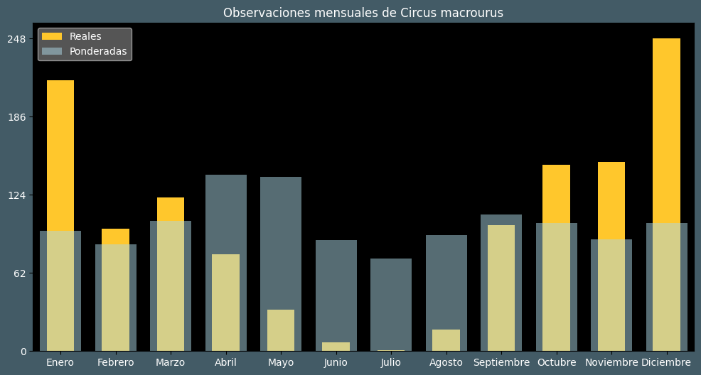

Observaciones por mes
Observations por hora

Categoría IUCN: NT
Género: Circus
Familia: Accipitridae
Orden: Accipitriformes
Descubrimiento: Gmelin (1770)
| Idioma | Nombre |
|---|---|
| Afrikaans (af) | Witborspaddavreter (witborsvleivalk) |
| Arabic (ar) | مرزة بغثاء |
| Belarusian (be) | Стэпавы лунь |
| Bulgarian (bg) | Степен блатар |
| Catalan (ca) | Arpella pàl·lida russa |
| Chinese (zh) | 草原鹞 |
| Chinese traditional (zh-TW) | 草原鷂 |
| Croatian (hr) | Stepska eja |
| Czech (cs) | Moták stepní |
| Danish (da) | Steppehøg |
| Dutch (nl) | Steppekiekendief |
| English (en) | Pallid harrier |
| Estonian (et) | Stepi-loorkull |
| Finnish (fi) | Arosuohaukka |
| French (fr) | Busard pâle |
| German (de) | Steppenweihe |
| Greek (el) | Στεπόκιρκος |
| Hebrew (he) | זרון שדות |
| Hungarian (hu) | Fakó rétihéja |
| Icelandic (is) | Fölheiðir |
| Indonesian (id) | ? |
| Italian (it) | Albanella pallida |
| Japanese (ja) | ウスハイイロチュウヒ |
| Korean (ko) | ? |
| Latvian (lv) | Stepes līja |
| Lithuanian (lt) | Stepinė lingė |
| Maceodnian (mk) | Степска еја |
| Malayalam (ml) | മേടുതപ്പി |
| North_sami (se) | Ádjohávut |
| Norwegian (no) | Steppehauk |
| Persian (fa) | سنقر سفید |
| Polish (pl) | Błotniak stepowy |
| Portuguese (pt) | Tartaranhão-pálido |
| Russian (ru) | Степной лунь |
| Serbian (sr) | Stepska eja |
| Slovak (sk) | Kaňa stepná |
| Spanish (es) | Aguilucho papialbo |
| Swedish (sv) | Stäpphök |
| Thai (th) | เหยี่ยวทุ่งสีจาง |
| Turkish (tr) | Bozkır delicesi |
| Ukrainian (uk) | Лунь степовий |